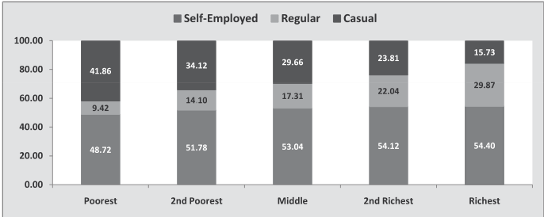

| Category | Self-Employed | Regular | Casual | | :--- | :--- | :--- | :--- | | Poorest | 48.72 | 9.42 | 41.86 | | 2nd Poorest | 51.78 | 14.10 | 34.12 | | Middle | 53.04 | 17.31 | 29.66 | | 2nd Richest | 54.12 | 22.04 | 23.81 | | Richest | 54.40 | 29.87 | 15.73 |
